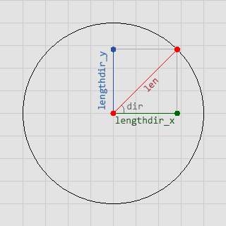
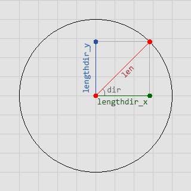

Devuelve el componente vertical del vector determinado por el largor y ángulo dados.
Sintaxis
lengthdir_y(len, dir);
Argumentos
| Argumento | Descripción |
|---|---|
| len | El largor del vector. |
| dir | El ángulo del vector (en grados). |
Descripción
Esta función devuelve el componente vertical de un vector determinado por el largor y ángulo dados. Podría explicarse como la distancia vertical que hay entre los dos puntos que conforman el vector establecido. La siguiente imagen es una explicación gráfica:


Devuelve
Número real.
Ejemplo
disx = lengthdir_x(sprite_width/2, image_angle); disy = lengthdir_y(sprite_width/2, image_angle); instance_create(x + disx, y + disy, obj_Bala);El código anterior permite, en pocas palabras, crear una instancia del objeto
obj_Bala en frente del sprite del objeto que lo ha ejecutado, tomando en cuenta la dirección del sprite.